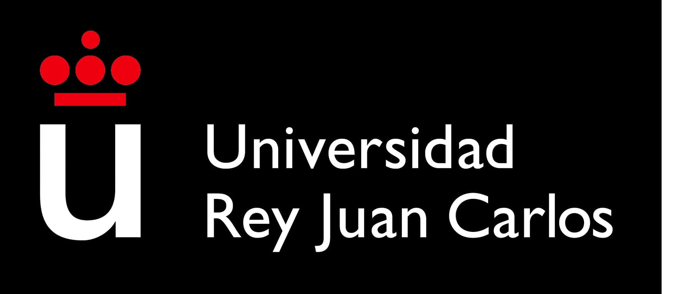

A lo largo de los años he desarrollado talleres y conferencias diseñados para inspirar, transformar y generar impacto real. Cada encuentro es una oportunidad para compartir herramientas prácticas, experiencias significativas y reflexiones profundas que motivan al crecimiento personal y profesional. Si estás buscando espacios donde impulsar el cambio, despertar nuevas perspectivas y conectar con tu potencial, esta sección es para ti.
Imparto talleres diseñados para generar un cambio real y duradero en las personas, los equipos y las organizaciones. Cada encuentro es una experiencia práctica, motivadora y enfocada a la acción, donde los participantes no solo aprenden herramientas, sino que se llevan una nueva forma de ver y afrontar la vida o el trabajo.
Los talleres que facilito están basados en mi formación con referentes internacionales como Lain García Calvo y John C. Maxwell, combinando coaching, liderazgo consciente, inteligencia emocional y estrategias de alto rendimiento.
Cada sesión está pensada para inspirar, movilizar y transformar. No se trata solo de adquirir conocimientos, sino de integrarlos para aplicarlos desde el primer momento.
Si estás buscando un taller que realmente impacte, que deje huella y que ayude a tu equipo o comunidad a dar un paso adelante, estaré encantado de colaborar contigo.
Entrevista a Juan José Valero
Conocimientos Gastronómicos
Del estrés al éxito.
Jesús Juan Rubio
SENSAIDO 2017
Descubre las experiencias de quienes han asistido a nuestros talleres y conferencias. Sus palabras reflejan el impacto real de cada encuentro, la conexión vivida y el conocimiento compartido. ¿Tú también fuiste parte? ¡Déjanos tu opinión!

Me siento afortunado de formar parte de este proyecto. Enhorabuena a todos por vuestro esfuerzo ha sido espectacular

Participante del taller
Quiero aprovechar esta oportunidad para expresar mi más profundo agradecimiento a Juanjo por
despertar nuevas ideas en las personas, a mí particularmente me hizo recapacitar sobre la
posibilidad de ayudar a nuestros mayores.
GRACIAS POR SER
AUTÉNTICO
Proceso de Coaching
Excelente guía y prácticas recomendaciones. ¡De todo corazón! ¡Gracias Juanjo!
Participante del taller
